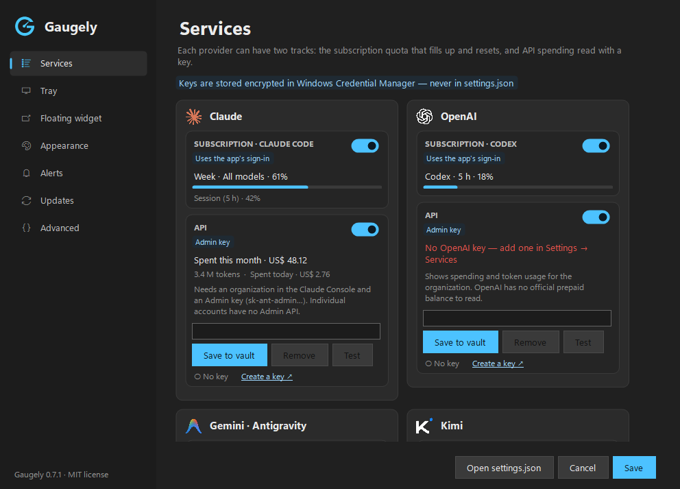
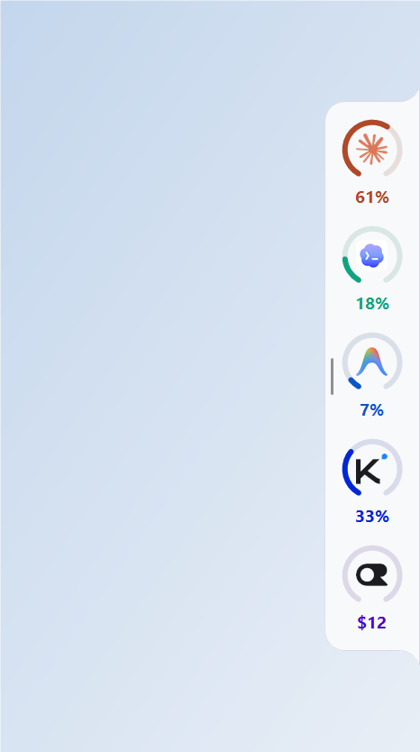
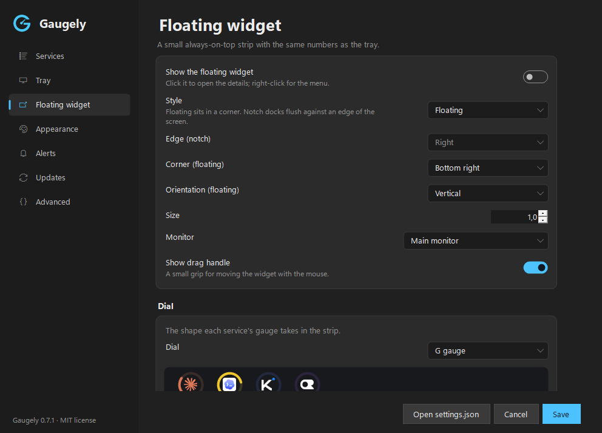

Your AI limits, in the Windows tray.
Gaugely shows how much is left of each AI subscription and what the APIs are costing you, as tray icons and an optional floating strip, so you see a limit coming before it stops you mid-task.
Free and open source (MIT) · Windows 10 and 11, x64 · needs the .NET 9 Desktop Runtime · checksum (SHA256SUMS.txt)

What it shows
| Provider | Subscription | API |
|---|---|---|
| Claude | Claude Code: 5-hour and weekly windows | Anthropic Admin API: spend this month and today |
| OpenAI | Codex | OpenAI Admin API: spend this month and today |
| AI Pro quotas, from the Antigravity CLI | — | |
| Kimi | Kimi Code: 5-hour and weekly windows | Kimi platform balance |
| OpenRouter | — | Credit balance, spend today, this week and this month |
| DeepSeek | — | Balance |
How it works for you
One icon per service
Each tray icon shows the limit that will run out first. Hover for that service's limits; click for the full details.
Floating strip
A small gauge per service, always on top, horizontal or vertical — or docked flush against a screen edge.
Alerts
A notification when a limit crosses the level you choose.
Settings for everything
Light and dark themes, 11 languages, and a plain settings.json for those who prefer a file.

Notch mode
Dock the strip flush against any edge of the screen. The corners on the docked side curve inward, so it reads as part of the screen rather than a window floating over your work.
- Drag it to another edge and it snaps there; the position along the edge is remembered.
- Hover a gauge for that service's limits; click for the full details.
- Ctrl + mouse wheel resizes it.
Pictured with sample data.


Private by design
- Runs only on your PC. No account, no telemetry, no server of ours in between.
- Keys stay in Windows. API keys you paste go to the Windows Credential Manager, never to a file.
- Only the official services. Every address is fixed in the code, and requests that carry a key never follow redirects.
- Updates are your call. Checking is off by default; when you install one, its origin, checksum and version are verified first.
The full list of what is read and sent, and where, is in the security notes.
Install
Download
- Install the .NET 9 Desktop Runtime if you do not have it.
- Download
Gaugely.exeandSHA256SUMS.txtfrom the latest release. - Check the hash — it must match the
Gaugely.exeline ofSHA256SUMS.txt:Get-FileHash Gaugely.exe -Algorithm SHA256 - Put it in a folder of its own and start it. Tick Start with Windows in the tray menu if you want it at logon.
Scoop
scoop bucket add gaugely https://github.com/kimmansur/gaugely
scoop install gaugely/gaugelywinget
winget install kimmansur.GaugelySubmitted to the winget catalog; the command works once the package is approved. winget installs it without a Start menu shortcut: run gaugely once, then tick Start with Windows in the tray menu.
Gaugely.exe is not code-signed, so the first time you run it Windows SmartScreen may say it protected your PC. Check the hash as above, then choose More info → Run anyway.
Credits
Gaugely is a fork of RateTray by nowrap. The polling engine, the tray icons, the details window and much of what makes it work come from there.
Claude, Codex, Kimi, Gemini, Antigravity, OpenRouter, DeepSeek and the other names here are trademarks of their owners. Gaugely is an independent project and is not affiliated with or endorsed by any of them.